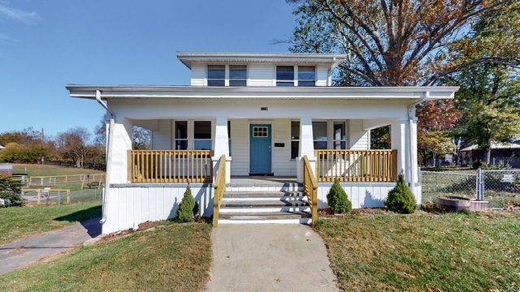
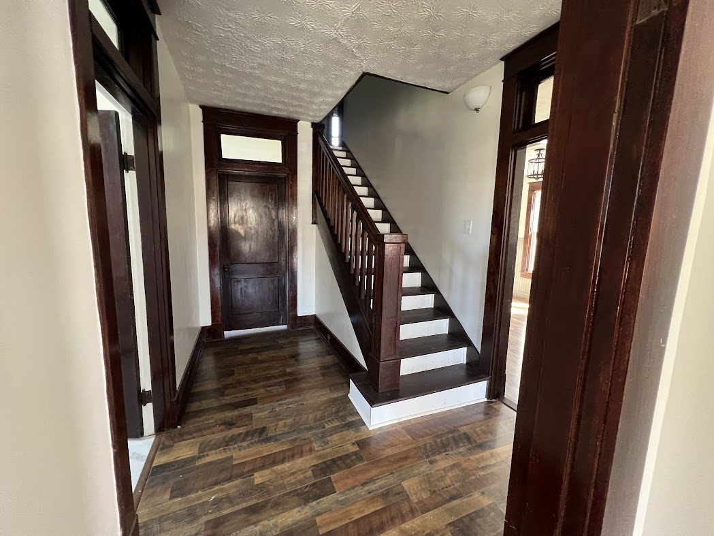
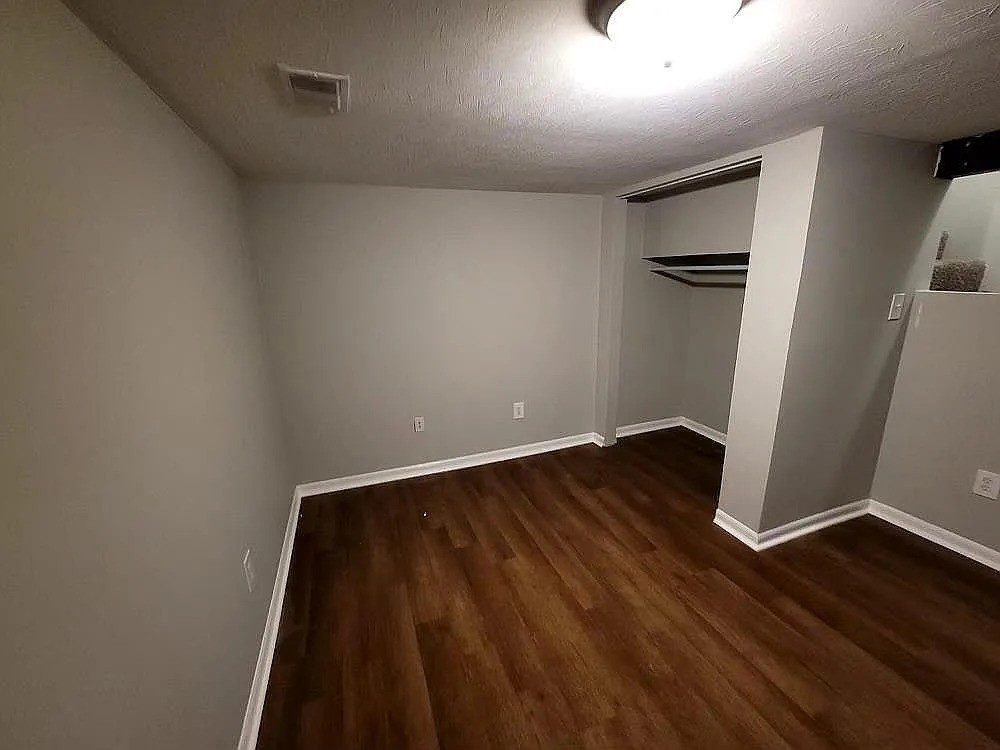
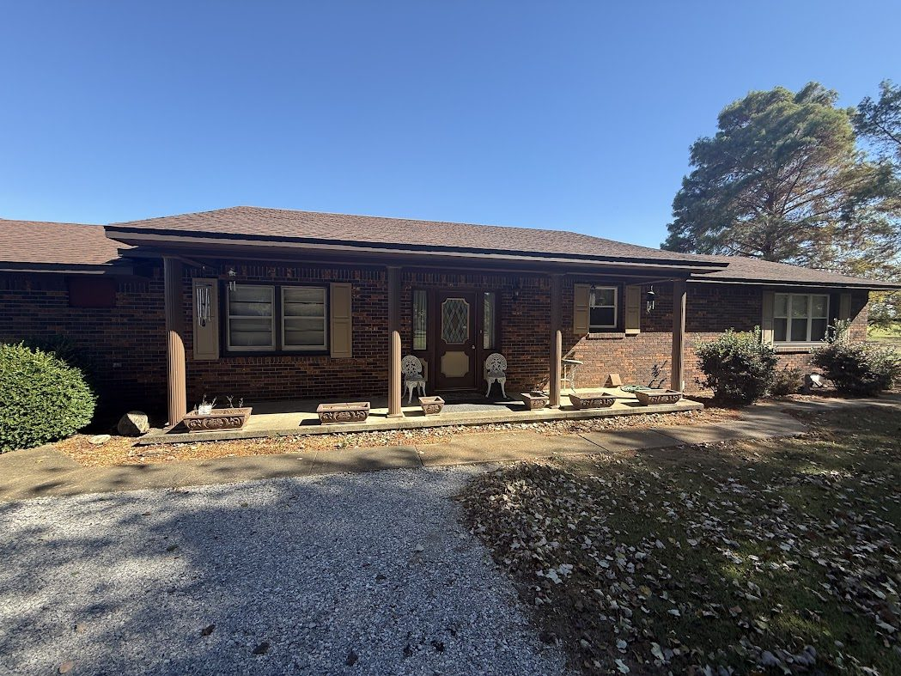

Holladay Apartments
A 26-unit value-add in Danville, Kentucky. Three-year restoration for tenants and investors. (Published estimate: about 15% IRR at exit.)
Numinor restores tired buildings — apartments and small commercial — so residents get a good place to live and partners get a simple way to put capital to work.
Email for a clarity call How to get involvedA 26-unit value-add in Danville, Kentucky. Three-year restoration for tenants and investors. (Published estimate: about 15% IRR at exit.)
Houses we bought, restored, rented, and refinanced back to zero basis — including Bush St in Covington, State Route Rd in Water Valley, and Locust St in Erlanger.
We do the work: find the building, run the rehab, house the residents, and report to partners. Small commercial and apartments, done in person.




Track record is from projects already described on drbuhler.com. Past results are not a promise of future returns.
A coastal restoration in California — the current live project. Permits, framing, and the path to a dry shell are being documented as we go.
A small office — undervalued and undermanaged. Capital placement is open; expected deadline Thanksgiving 2026.
If you want apartments or small commercial in your mix — cash flow, a specific deal, or a first conversation — email Dionysius. A short clarity call is enough to see whether there’s a fit.
No pitch deck in this first note. Say what you’re hoping for (income now, long hold, learning the work) and we’ll go from there.